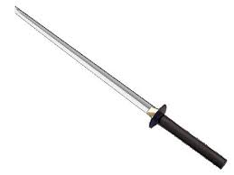
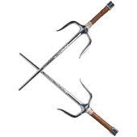
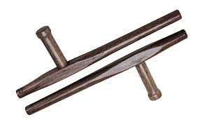
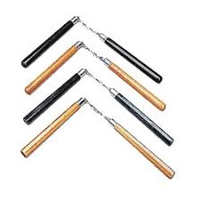
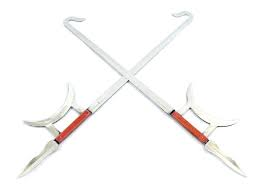
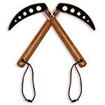

Martial Arts has ever been thought of a way to maintain peace and prosperity. Many great martial artists have honed their skills in order to teach the new generation the way to maintain peace. Martial artisits also practice their respective arts because:
It teaches honor and respect.
It teaches you to use non-violent conflict resolution.
It helps you to set and achieve goals.
It helps you to gain confidence and boost self-esteem.
It improves your mental and physical strength.
A few different type of Martial Arts and their categories:
Category
Type
Description
Hand-to-hand/Bare handed combat
Boxing
Hand-to-hand martial arts styles teach practitioners how to defend themselves while on their feet by using blocks, kicks, punches, knees, and elbows. They focus extensively on body strength, nimble footwork, clever techniques, and reaction speed. This is a great way to sharpen mental skills and improve awareness, techniques and raw power.
Capoeira
Karate
Kickboxing
Kung-fu
Grappling type combat
Brazilian Jiu-Jitsu
The grappling styles in martial arts focus on teaching practitioners how to take opponents to the ground, where they either achieve a dominant position or utilize a submission hold to end the fight.
Jujutsu
Wrestling
Sumo Wrestling
Weapon-Based(Using swords, spears, etc)
Kali
Many of the aforementioned styles used above use weapons in their systems. For example, Goju-ryu karate and many kung-fu style practitioners are taught to use the bokken (wooden sword). These bokken are used to refine actual metal-sword fighting skills. But some martial arts are centered entirely around weapons.
Iaido
Kendo
Meditative/Self-awareness Styles
Tai-Chi
Meditative styles are mostly concerned with breathing techniques, fitness, and the spiritual side of their movements rather than combat in particular. They can be used for combat as well.
Chi-Gong Based
A few videos on martial arts:
Certain weapons used extensively in martial arts:

The Katana

The Sais

The Batons

The Nun-chuk

The Shang-Gou

The Kamas